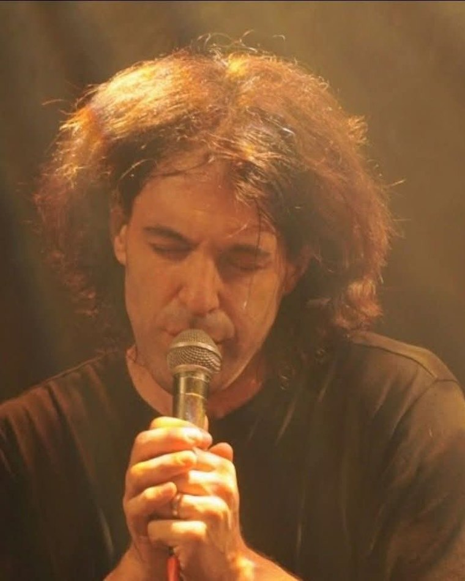
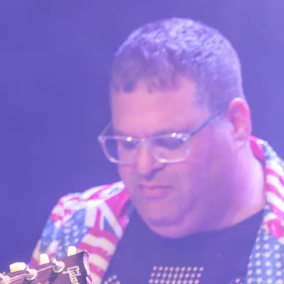

ניקול רודוי
שירה
זמרת ושחקנית. מופיעה בהפקות מוזיקליות, בפרויקטים אמנותיים ובמחזות זמר (״צלילי המוזיקה״, ״LEA״, מופעי קברט ועוד). בוגרת ״המסלול לתיאטרון ומחזות זמר״ ולהקה צבאית.
10 סיבובים ו-20 להיטים שכולם מכירים: שיר מסדרה מול שיר מסרט, סביב נושא משותף. מצביעים מהטלפון, והתוצאה עולה למסך הגדול. מופע ערב נוצץ, עם גלאם, כוריאוגרפיה וסולן וסולנית בפרונט.
הדגמה: סיבוב מסיבת הריקודים, Bad Romance מול It's Raining Men, על המסך ובטלפון
על המסך: וידאו מקורי לכל שיר, ושירי הסדרות מקבלים פתיח מקורי בסגנון העשור שלהם.
כל דו־קרב בנוי סביב נושא משותף: שיר מסדרה מול שיר מסרט. ארבע דוגמאות מתוך עשרה.
להיטים מקפיצים ומרקידים. על המסך רצים סרטוני אווירה מקוריים לכל שיר, ובין השירים עולות תוצאות ההצבעה.
זמרת ושחקנית. מופיעה בהפקות מוזיקליות, בפרויקטים אמנותיים ובמחזות זמר (״צלילי המוזיקה״, ״LEA״, מופעי קברט ועוד). בוגרת ״המסלול לתיאטרון ומחזות זמר״ ולהקה צבאית.

בוגר בית הספר רימון. זמר בצמד ״רטרו״ לקבלות פנים ובלהקת המחווה ״טופ גאנז״. יוצר מחזות הזמר ״טריפ״ ו״עשן מעל המים״, ומפיק ויוזם הקונספט של Soundclash.
 ולאד פוזיילובגיטרה וקולות · ״הכל בגלל ג׳ני״
ולאד פוזיילובגיטרה וקולות · ״הכל בגלל ג׳ני״
חן ירמיצקיקלידים · הראסטיז עומר מתתיהובס
עומר מתתיהובס תומר כהןתופים · Honeybee
תומר כהןתופים · Honeybeeמשמאל, 20 שניות מתוך הקהל בהופעת הניינטיז בוונדרבר, חיפה. מימין, סדרות נגד סרטים מהכניסה ועד ההכרעה: סורקים QR, סרטון AI מקורי לכל שיר על המסך, אימוג׳ים, הצבעה בלחיצה והכרעה. האפליקציה אמיתית, הקהל בצילומים מהופעות הניינטיז, והתוצאה מתוך הדגמה. בסרטונים מופיעה הזמרת של מופע הניינטיז. בסדרות נגד סרטים שרה ניקול רודוי. סרטון מהופעה של סדרות נגד סרטים יעלה לכאן באמצע דצמבר.
להיטים מקפיצים ומרקידים שמרימים את כל האולם. רוצים יותר? בונים את הערב מתוספות שאנחנו מביאים:


כל סיבוב נגמר כשהקהל מכריע, והנקודות מצטברות עד ההכרזה.
שני הצדדים מוכרזים מהבמה, והקהל סורק קוד ונכנס לאפליקציית ההצבעה מהטלפון. בלי הורדה, בלי הרשמה.
הלהקה מנגנת שיר של צד אחד, ומיד אחריו שיר של הצד השני. ראש בראש, בביצוע חי ונאמן למקור.
ההצבעה פתוחה לאורך כל הסיבוב. בסופו יש ספירה לאחור של 20 שניות, והתוצאה נחשפת בזמן אמת.
הניקוד המצטבר קובע את הצד המנצח, ובין המצביעים מוגרלים פרסים.
את מערכת ההצבעות אנחנו מביאים ומפעילים מהבמה. זו אפליקציה שפיתחנו בעצמנו, והיא רצה על הטלפון של הקהל. על המסך רצים סרטוני אווירה מקוריים לכל שיר ותוצאות ההצבעה. אם אין מסך או מקרן במקום, נכלול אותו בהצעת המחיר.
שלוש דוגמאות מתוך עשרים סרטוני האווירה שיצרנו למופע. כל שיר מקבל סרטון משלו, עם רמזים לסדרה או לסרט שהוא מגיע מהם.
תגידו לנו תאריך, מקום וגודל קהל משוער, ונחזור אליכם עם הצעה.